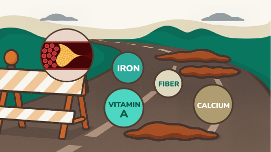
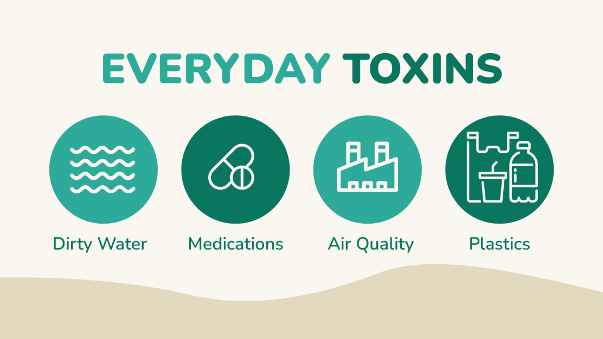
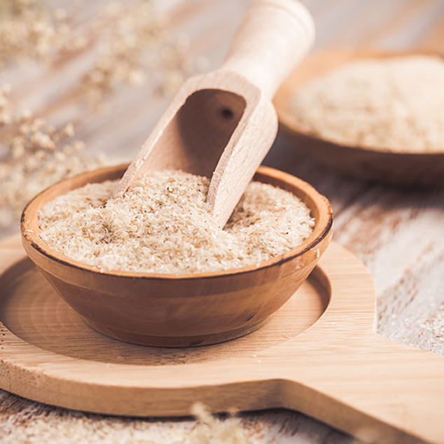
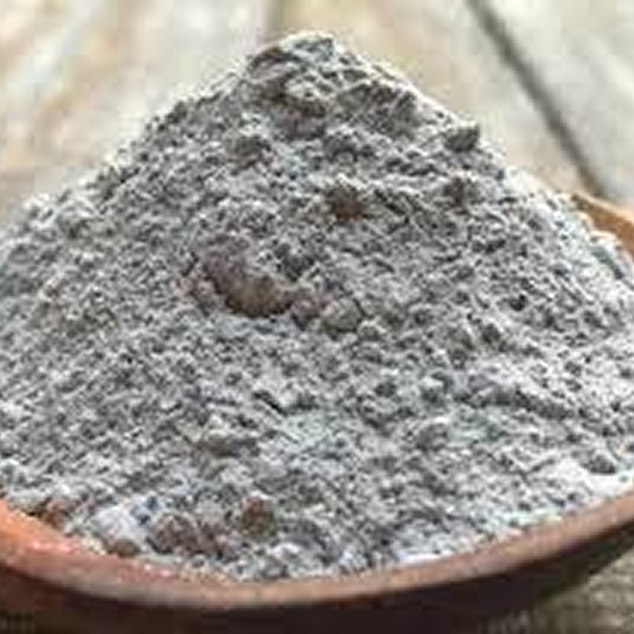
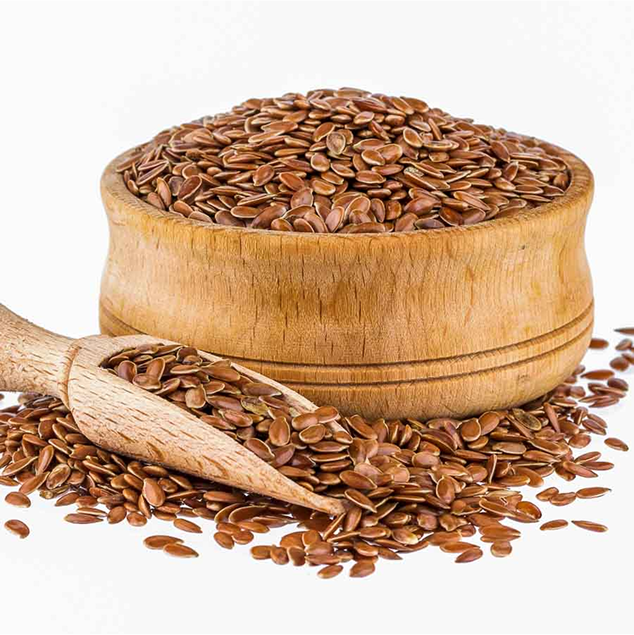

April 8th, 2025
Important Notice From the Desk of Medical Researcher Ms. Emma Johnson
As Much as 78% of Your Glucolyn Investment Might Be Getting Wasted
You're just moments away from jumpstarting your wellness journey—but there's one critical step most people miss entirely.
Before your Glucolyn order is finalized and ships out, there's something vital you need to know. Even with your commitment to better health, a silent issue may be blocking the results you're hoping for.
Let’s be honest—you’ve made a smart move by investing in Glucolyn. You want more energy, enhanced metabolism, and a sharper, more focused you. But here’s the scary part… what if a huge portion of those nutrients never even get absorbed into your system?
It sounds dramatic, but it’s a common problem almost nobody talks about…
Groundbreaking research reveals a startling truth:
Up to 78% of supplement ingredients may be completely wasted if your digestive tract—particularly your colon—isn’t functioning at full capacity. Even when you're taking all the right steps, the nutrients you count on might simply be flushed out before your body can use them. It doesn’t matter how advanced or premium your supplements are—if your body can’t absorb them properly, they won’t work.
Reference: Stephen J. O'Keefe, "Digestive processes in the human colon," Nutrition, Volume 11, Issue 1, 1995, Pages 1-5.
Let that sink in. Even when you're taking all the right steps, the nutrients you count on might simply be flushed out before your body can use them.
It doesn’t matter how advanced or premium your supplements are—if your body can’t absorb them properly, they won’t work.
Dr. Michael Levine from the Gastroenterology Research Institute put it perfectly:
"It’s like pouring top-grade fuel into a car with a blocked fuel line. The quality doesn’t matter if it never reaches the engine."
That says it all.
The problem may not be the supplement itself—it’s how your body processes it.
So if your digestive system is underperforming, even the most powerful formulas won’t stand a chance.
Could your Glucolyn results be getting blocked by your gut?
The real problem isn’t the powerful formula behind Glucolyn — it’s your body’s ability to absorb it. Think of your digestive tract, especially your colon, as the main gatekeeper. When it’s sluggish, overloaded, or imbalanced, even the most potent ingredients—like those in Glucolyn—can hit a wall before they ever reach your bloodstream.
That means your investment may not be delivering everything it could, all because of one overlooked factor.

And unfortunately, here’s what typically happens when your colon isn’t working at its best:
❌ Key nutrients get blocked before absorption
❌ Your system struggles to process health-boosting compounds
❌ The money you spent on Glucolyn doesn’t deliver its full return
❌ You only feel a fraction of the potential transformation
It’s frustrating—but it’s also fixable. In fact, this may be why some people achieve remarkable changes, while others barely scratch the surface.
Let’s get specific…
How Much Is Your Gut Holding You Back from the Results You Deserve?
A recent study revealed something shocking:
Colon Health
Nutrient Absorption
Supplement Waste
Poor
22%
78% WASTED
Average
45%
55% WASTED
Excellent
98%
Virtually None
What does this mean for you?
If your colon isn't clean and functioning at full capacity, up to 80% of your Glucolyn could be going to waste before it ever reaches your cells.
You’ve made a smart decision investing in Glucolyn—but is your digestive system quietly blocking its full potential?
Is your colon the hidden reason you’re not getting the results you deserve?
It’s time to check in with your gut. Because this isn’t just about science — this is about YOU. Your body. Your signals.

Ask yourself honestly:
· Do you feel bloated after eating?
· Does your energy crash at random times during the day?
· Do you go longer than a day without a bowel movement?
· Ever notice food that seems undigested in your stool?
· Have you used antibiotics within the last 12 months?
If you answered “yes” to even one, your body is sounding the alarm. These symptoms aren’t random — they’re warning signs that your digestive system may be struggling… and as a result, up to 78% of your Glucolyn could be going to waste. Every single dose you take may be largely ineffective if your colon isn’t ready to absorb it.
Why Many Glucolyn Users Never Experience the Full Results

The majority of people today are walking around with a sluggish, overworked digestive system. And the causes are everywhere:
· Diets filled with ultra-processed, low-fiber foods
· Environmental toxins disrupting healthy gut flora
· High-stress routines and lack of physical activity
· Natural aging that slows enzyme production
· Medications that block or interfere with digestion
Chances are, you’re dealing with more than one of these daily — and each one acts like a roadblock on your digestive “highway,” keeping your Glucolyn from being fully absorbed.
Without clearing that path? Your supplement could be going to waste.
It’s like buying a high-performance sports car and never changing the oil — all that power, with nowhere to go.
But here’s the great news:
There’s a straightforward, science-backed fix — and our most successful customers are already taking full advantage of it...
What Our Most Successful Customers Found
They all made one simple upgrade that unlocked the full potential of Glucolyn:
They supported and revitalized their gut health.
“I was already seeing good changes with Glucolyn — more energy, better focus. But when I started using GutBooster, everything accelerated. No more brain fog, my energy skyrocketed, and I finally felt like my system was working at full power.”
— Daniel S., 44
“Glucolyn helped me feel more in control, but I had a feeling I could be getting even more from it. After just a few days with GutBooster, I felt the difference — lighter digestion, clearer mind, more energy, and better overall well-being.”
— Vanessa L., 36
"I started Glucolyn and felt some changes, but honestly wondered if it was just placebo. Then I added GutBooster like they recommended—and WOW. Within a week, I felt the Pink Salt minerals working at a completely different level. My energy went from 'okay' to 'unstoppable.' I'm convinced GutBooster was the missing piece."
— Michael R., 51
These aren’t just “feel-good” stories — they’re real turning points.
And it’s exactly why we created a breakthrough formula that tackles the hidden absorption issue from the inside out, so your body can fully absorb the nutrients from Glucolyn — amplified with powerful gut support.
Introducing...
GutBooster — Advanced Gut Support for
Glucolyn Users

A breakthrough digestive formula created to enhance gut and colon health—ensuring your body actually absorbs and uses the full power of Glucolyn.
The Fast-Acting "Rescue Solution" That Helps You Avoid Wasting Glucolyn
Think of GutBooster as your personal "nutrient unlocker" — it clears internal blockages and opens up your digestive system so that Glucolyn can do its job at full strength.
Picture this: you buy a high-performance sports car, but instead of premium fuel, you pour in water. That’s exactly what it’s like taking Glucolyn without first getting your digestive system in check. GutBooster makes sure your body’s “engine” gets the full power of the premium formula you’ve invested in—elevating your results from decent to outstanding.
How GutBooster Works with Your Glucolyn Formula
While Glucolyn delivers:
- 84 trace minerals from Himalayan Pink Salt
- Anti-inflammatory Korean Turmeric
- Metabolic-boosting plant compounds
✅ Clearing Digestive Buildup → Removes the "roadblock" preventing nutrient absorption
✅ Maximizing Mineral Uptake → Increases Pink Salt mineral absorption by up to 400%
✅ Preventing Nutrient Waste → Stops up to 78% of your Glucolyn from being flushed away unused
✅ Supporting Gut Flora Balance → Creates the ideal environment for absorption
✅ Reducing Bloating & Discomfort → Gentle cleansing without harsh laxatives
✅ Accelerating Results Timeline → Most users see enhanced Glucolyn effects within 7-14 days
The Result? Every drop of your Glucolyn works at full power—no waste, no guesswork, just transformation.
How Does GutBooster Work?
I discovered something remarkable: when three key natural ingredients are blended in the right proportions, they work in full harmony with Glucolyn to create a powerful colon-cleansing, bloat-relieving, and “Glucolyn absorption amplifier” effect.
Every capsule of GutBooster is packed with:

1. Psyllium Husk
Psyllium Husk supports healthy digestion by gently sweeping waste from your colon. It promotes regular bowel movements, eases constipation, and helps reduce bloating for a lighter, cleaner gut.

2. Bentonite Clay
Bentonite Clay acts like a magnet for toxins—binding to harmful substances in your digestive tract and flushing them out naturally. It supports gut balance and helps reduce gas and discomfort.

3. Flax Seed
Flax Seed is packed with fiber and omega-3s, helping to smooth digestion and promote regularity. It nourishes your gut lining, supports good bacteria, and helps your body detox more effectively.
But we didn’t stop at theory—we tested this exact combination with real Glucolyn users. No changes were made to their diet, activity level, or supplement regimen... except the addition of GutBooster.
The difference was dramatic:
Benefit
Glucolyn Alone
With GutBooster
Energy Levels
+27%
+86%
Fat Reduction
+133%
+202%
Visible Muscle Tone
+11%
+43%
Mental Clarity
+31%
+79%
Sleep Quality
+18%
+64%
Digestive Comfort
+23%
+92%
Pretty impressive, right?
You've already made a smart move by choosing Glucolyn — but if your digestion isn’t optimized, you might be losing a big chunk of those results before they even reach your system.
Why Pink Salt Minerals Need Special Absorption Support
Here's something fascinating about Himalayan Pink Salt that most people don't realize:
Pink Salt contains 84 trace minerals in their natural, crystalline form. These aren't synthetic vitamins—they're ancient minerals that your body recognizes at a cellular level.
But there's a catch:
These minerals are only beneficial if they can pass through your intestinal wall and enter your bloodstream. And that requires a healthy, clean digestive tract.
When your colon is sluggish or congested (which affects an estimated 75% of Americans), these precious minerals—chromium, magnesium, potassium, calcium, and dozens more—simply pass through your system without being absorbed.
Think of it this way:
- Glucolyn delivers the Pink Salt minerals (the key) 🔑
- Your digestive system is the lock 🔒
- If the lock is rusty or blocked, even the perfect key won't work
GutBooster cleans the lock, ensuring that every mineral from your Pink Salt formula gets exactly where it needs to go—into your cells, transforming your metabolism from the inside out.
Don’t Let Your Progress Slip Through the Cracks.
Without a Cleansed Colon, You’re Missing the Mark:
⭕ You’ve got a high-powered supplement, but your body isn’t fully absorbing it
⭕ Potent nutrients, blocked by sluggish digestion
⭕ Life-changing benefits you paid for… but may never truly feel
Let’s face it — no one wants to throw money or effort into a solution that can’t deliver its full potential.
That’s why supporting your colon health is the secret weapon to unlocking everything Glucolyn is meant to do.
You’ve already taken the smart step by investing in your health. Now it’s time to make sure that investment pays off.
Think about it: you wouldn’t buy premium seeds and toss them into dry, unhealthy soil. But that’s what happens when you take Glucolyn without first preparing your digestive environment. GutBooster creates the ideal internal conditions for Glucolyn to thrive in your body — so that every capsule you take translates into real, noticeable results.
URGENT ONE-TIME OFFER: Only Available Before Your Order Ships
This Is Your One Shot to Add GutBooster at a Major Discount. Once your order is finalized and ships out, this special offer disappears for good — and if GutBooster is even available later, it’ll be at full retail price.
Select Your Gut-Support Package Below:
6 BOTTLES
$27/ bottle
Total: $162
Free Shipping
Add 6 BottlesAdd 6 Bottles GutBooster

100% 60 Day Money Back Guarantee
GutBooster isn’t sold in stores or on any other website — and it never will be. It’s exclusively offered right here, on this page only.
In fact, this is your final opportunity to get your hands on GutBooster™ — ever.
Make the smart move. Prioritize your long-term digestive health and upgrade your order now.
Why Grabbing 6 Bottles Makes the Most Sense:
Just $27 per bottle — the lowest price we’ll ever offer
✔ Guaranteed supply — even if we run out elsewhere
✔ Instant 75% savings
✔ FREE priority shipping included
This isn’t just the best deal — it’s the smartest move to protect both your health and your wallet.
How GutBooster Protects Your Glucolyn Investment:
✅ Prevents up to 78% of your Glucolyn from going to waste
✅ Clears the path for optimal nutrient absorption
✅ Breaks down the digestive “blockages” holding you back
✅ Helps your body fully absorb every capsule you take
✅ Stops your hard-earned money from being flushed away
100% RISK-FREE DECISION
You're fully protected by our 60-day "Perfect-Condition" Guarantee. Try GutBooster. Feel the results. And if you are not completely satisfied, simply return the unused bottles in perfect condition. You will receive a full refund for these bottles. No hassle, no questions asked.
You've got nothing to lose... and the full power of Glucolyn to gain.
The choice you make right now isn't just about adding another supplement – it's about deciding whether you want partial results or a total transformation. While Glucolyn alone can help, GutBooster is the missing piece that helps your body actually absorb and use every drop.
This is your one and only chance to unlock the real power of Glucolyn.
✅ YES! I’m Ready to Cleanse My Gut and Get the Most Out of Glucolyn!
6 BOTTLES
$27/ bottle
Total: $162
Free Shipping
Add 6 BottlesAdd 6 Bottles GutBooster
100% 60 Day Money Back Guarantee
Your information is protected. Click the button to add GutBooster to your order now.
When experts talks about health transformation, they don't just focus on one thing. They teach a holistic approach — where every system in your body works together for true, lasting change. – Activated by Glucolyn’s Pink Salt and Korean Turmeric
(if you added SugarBoost) But there’s a Third Pillar that determines whether the first two actually work:
You can't take care of others if you don't first take care of yourself.
The Third Pillar of Transformation: A Complete Wellness Approach
You’ve already activated the first two pillars:
Pillar 1: Metabolism ✅
Reduces inflammation, boosts calorie burning
Pillar 2: Blood Sugar ✅
Stabilizes energy, eliminates cravings, prevents fat storage from insulin spikes
Pillar 3: Absorption & Gut Health ✅
Well, your body can't take care of transformation if it can't first absorb the tools you're giving it.
💪 GutBooster is that third pillar. The one that makes everything else possible.
Common Questions
Q: How do I know if I'm not fully absorbing Glucolyn?
If you're experiencing bloating, irregular digestion, or energy crashes during the day, there's a good chance your absorption is compromised. This is incredibly common, and most people never realize it.
Q: When will I start feeling a difference?
Most users report noticeable improvements in digestion within the first few weeks — and significantly enhanced Glucolyn results within 30 days of adding GutBooster to their routine.
Q: Are there any side effects?
Not at all. GutBooster contains only gentle, natural ingredients that support digestive health — no harsh chemicals or intense laxatives.
Q: Will this delay my Glucolyn order?
No. Your Glucolyn and GutBooster bundle will ship together with zero delays.
Q: Can I add this later?
Unfortunately, no. This offer is only available now — before your order ships. Once it leaves our warehouse, GutBooster returns to full price (if it's still in stock).
⚠️ WARNING:
This Offer Expires in Minutes. As soon as your Glucolyn order ships, this exclusive GutBooster discount disappears — for good. After that, GutBooster will only be available at the full retail price of $97 per bottle — and due to limited batches, it may be out of stock altogether. Don’t risk wasting your Glucolyn investment. GutBooster is the key to unlocking its full potential. Secure your supply at this deep-discount rate now — while you still can.
✅ CLEANSE YOUR COLON NOW:
6 BOTTLES
$27/ bottle
Total: $162
Free Shipping
Add 6 BottlesAdd 6 Bottles GutBooster
100% 60 Day Money Back Guarantee
P.S. - A Message from Our Most Successful Customers
One of the most common regrets we hear?
'I wish someone had told me to start GutBooster with my first bottle of Glucolyn. I lost 12 pounds that first month... but when I added GutBooster in month two, I lost 18 pounds in the next 30 days. I can't help but wonder how much more I would have lost if I'd started both together.'
Don't make the same mistake. Start with the complete system from day one.
P.P.S. With our 60-day, no-questions-asked, empty-bottle guarantee, there’s zero risk on your end—and everything to gain. - and everything to gain.
P.P.P.S. - Wisdom Worth Remembering
"You get in life what you have the courage to ask for."
You had the courage to ask for transformation when you ordered Glucolyn. Now have the courage to ask for the complete experience—the one that ensures you actually receive everything you're investing in.
Your body deserves the full transformation. Not 22% of it.